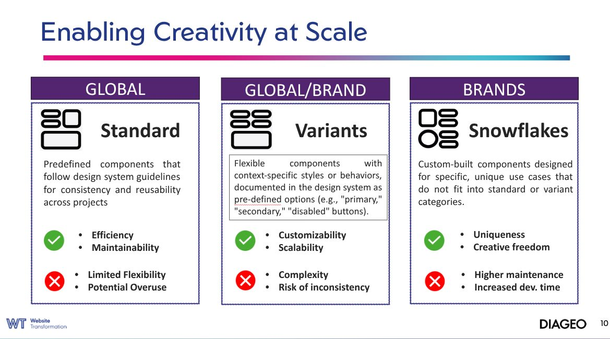

The Challenge
Diageo's 120-brand portfolio faced development inefficiencies, high maintenance costs and severe GDPR and WCAG compliance risk. The business needed one unified ecosystem that protected brand equity while preserving creative flexibility for every market.
The Approach
- Test & learn pilot. Validated the system with an initial Smirnoff Stockholm pilot site before wider rollout.
- Atomic architecture. Built 35 global Figma components using Supernova design tokens, pushing code straight into the enterprise CMS.
- Governed flexibility. Let brand agencies build custom components under strict compliance monitoring, backed by continuous training and drop-in sessions.
The Impact
- Commercial return. Redesigned the core age-gate compliance component; A/B testing via GA and Quantum Metric validated a 10% conversion increase, worth an estimated $9M.
- Global efficiency. Cut engineering defects and time-to-market while guaranteeing built-in GDPR and accessibility compliance worldwide.
- Still active. Built with a lean internal team and one agency partner, Bedrock UI remains Diageo's foundational digital design standard.
